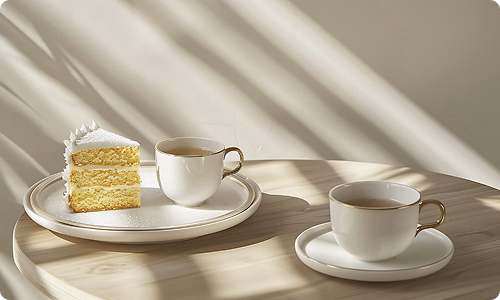

SPACE
청년들의 교류와 성장을 지원하기 위해 조성된 다양한 공용 공간들을 소개합니다.
목적에 따라 자유롭게 이용하실 수 있습니다.
로비
청년휴심 로비는 방문객의 편의를 위한 종합 안내 공간입니다. 당일 프로그램 일정, 시설 이용 방법 및 기타 문의사항에 대한 정보를 효율적으로 얻으실 수 있습니다.
고요의 방
외부의 방해로부터 차단된 명상실입니다. 마음의 평화를 위한 최적의 환경을 제공하며, 명상, 사색, 또는 조용한 마음 나누기 등 온전한 나에게만 집중하는 시간을 가질 수 있습니다.

지혜 나눔터
모든 청년에게 열려있는 지식과 지혜의 공간입니다. 이곳에서 독서, 소규모 스터디, 그룹 토론 등을 통해 서로의 경험과 지식을 나누며 함께 성장하는 즐거움을 경험할 수 있습니다.
프로그램실
프로그램실은 청년휴심에서 진행하는 워크숍, 강연, 그룹 활동 등이 이루어지는 활기찬 공간입니다. 넉넉한 공간과 시설을 갖추고 있어 다양한 모임에 자유롭게 활용할 수 있습니다.


마음 부엌
마음식탁은 따뜻한 음식과 이야기가 함께하는 공간입니다. 바쁜 일상에 지친 청년들이 모여 몸과 마음의 허기를 채우고, 서로의 삶을 나누는 편안한 소통의 장이 됩니다.